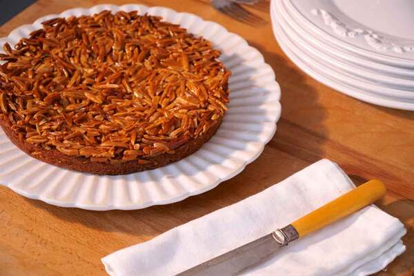

Tarte da Vó Luísa
INGREDIENTES PARA BASE:
- 1 ovo
- 150g manteiga
- 125g açúcar
- 200g farinha de amêndoa
- 50g farinha de trigo sem fermento
- 25 ml leite
- 1 limão (raspas)
INGREDIENTES PARA COBERTURA:
- 100g manteiga
- 100g açúcar
- 50ml de leite
- 180g amêndoa palitada
MODO DE PREPARO:
Para a Base: Misture a manteiga derretida com o açúcar até obter uma textura cremosa. Adicione o ovo, as raspas de limão e o leite, e mexa novamente para incorporar. Acrescente a farinha de trigo e a farinha de amêndoa, envolvendo bem todos os ingredientes. Espalhe a massa no fundo de uma forma de torta forrada com papel vegetal. Leve ao forno pré-aquecido a 180ºC por aproximadamente 15 a 20 minutos.
Para a Cobertura: Coloque todos os ingredientes em uma panela e aqueça em fogo médio por cerca de 3 minutos ou até atingir o ponto de estrada. Despeje a cobertura sobre a base já assada e leve ao forno novamente por mais 20 a 25 minutos, até dourar.
A História por trás da Receita
Essa é mais uma das lendárias receitas portuguesas: a famosa Tarte de Amêndoas, uma sobremesa carregada de memórias, especialmente por ter sido preparada por uma pessoa muito querida, a avó paterna do meu marido. Em um Natal especial, fui encarregada de fazê-la. Infelizmente, ela já não estava mais conosco, mas sua receita ainda vive, preservada no caderno de receitas da minha sogra, um tesouro que mantém viva a tradição e o sabor da nossa história familiar.
Recriar uma receita de família sempre traz uma grande responsabilidade. Fiz tudo com o coração apertado e cheia de medo, mas, quando finalmente tirei a tarte do forno, o dourado estava perfeito, e o aroma adocicado tomou conta da casa, trazendo uma sensação de herança e tradição. E agora, espero um dia passá-lo adiante para meus filhos, mantendo viva a história da nossa mesa.